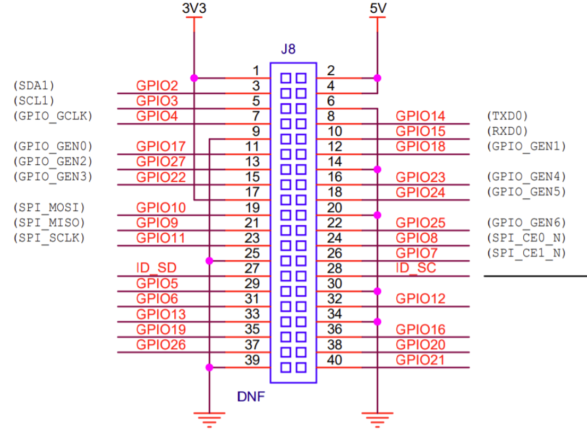

无屏怎么使用树莓派？
一个屏比一个树莓派还贵，不大可能为了玩个树莓派还单独买个屏，并不是每个人都有屏的需求
一、什么是树莓派
官方网址：https://www.raspberrypi.org/
Raspberry Pi 4 Model B


二、安装树莓派官方系统
官方下载工具网址：https://www.raspberrypi.org/software/
Raspberry Pi Imager

在刷系统的时候可以通过【设置】来指定用户名和密码

三、配置树莓派Wifi并开启SSH
系统安装完成后重新插拔USB SD读卡器，会挂在FAT格式的boot分区
在boot分区根目录创建
wpa_supplicant.conf文件，并写入ctrl_interface=DIR=/var/run/wpa_supplicant GROUP=netdev update_config=1 country=CN network={ ssid="your wifi ssid" psk="your wifi password" key_mgmt=WPA-PSK }
在boot分区根目录创建ssh.txt文件，空文件就行
为什么这么做可以配置Wifi和SSH，原因后续解读
四、MobaXterm SSH连接树莓派
查看树莓派IP
登陆路由器查看新登录的设备IP，等一小会
登陆树莓派
用户：pi
密码：raspberry
五、远程桌面
sudo apt-get update
sudo apt-get install xrdp
Windows远程桌面输入账号密码登录
用户：pi
密码：raspberry